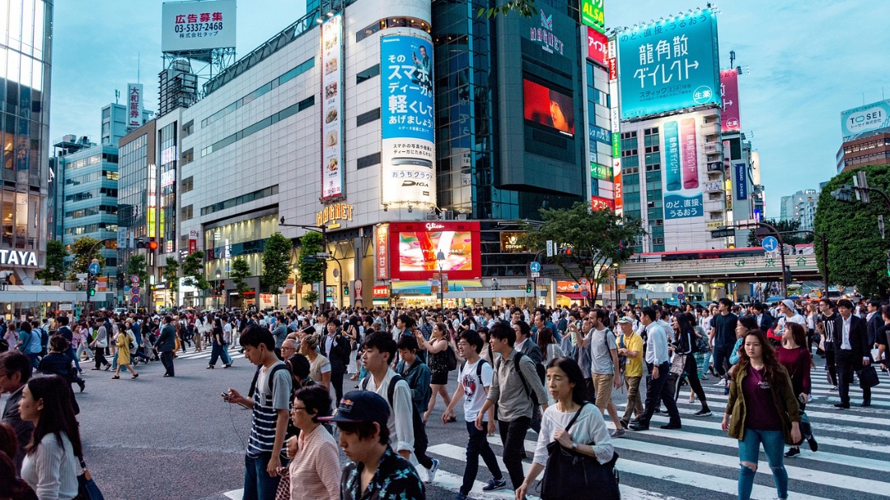
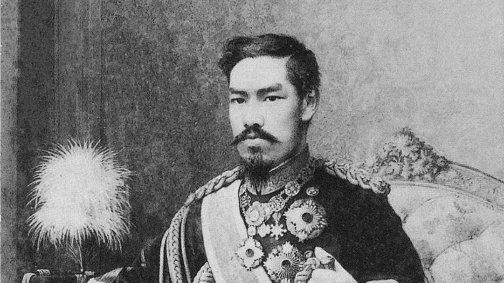
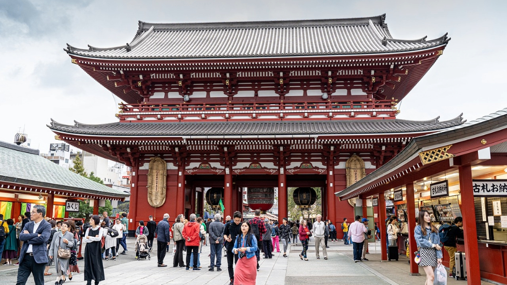
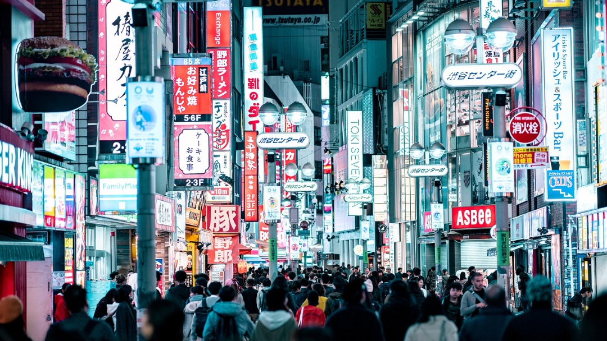
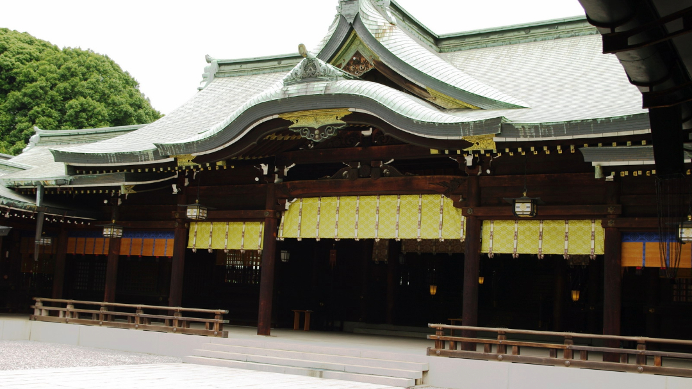
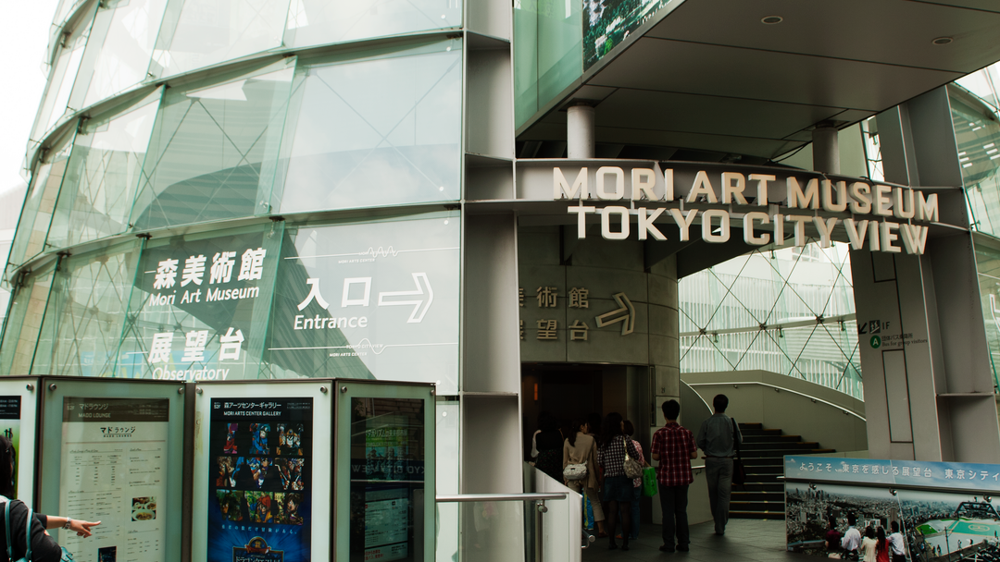
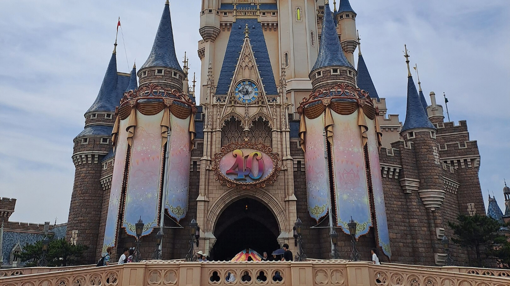
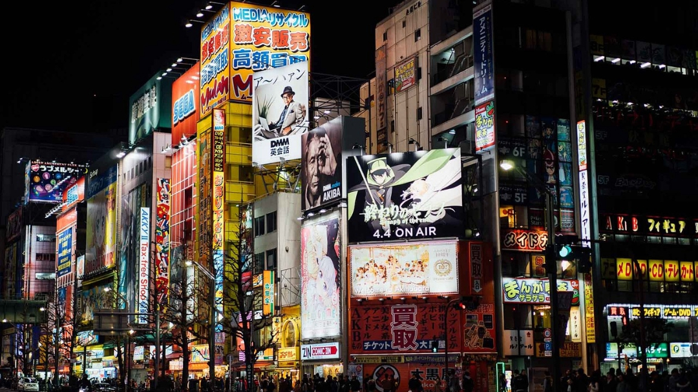
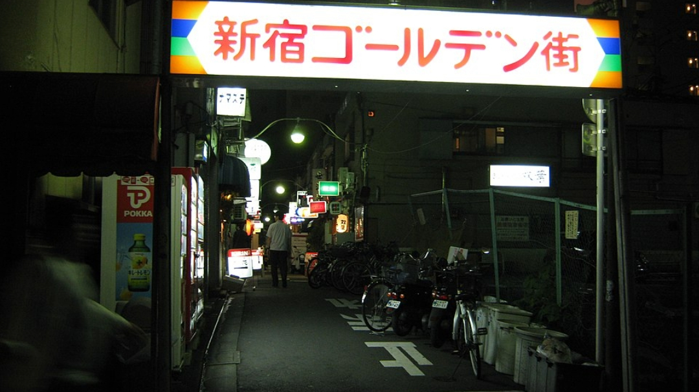

Tokio - miasto z największą aglomeracją na świecie
Tokio, stolica Japonii, to jedno z największych i najbardziej dynamicznych miast na świecie. Jego nazwa oznacza "Wschodnia Stolica" i odzwierciedla położenie na wschodniej stronie wyspy Honsiu, największej w archipelagu japońskim. Z populacją liczącą około 14 milionów w samym mieście i ponad 37 milionów w metropolii Tokio (stanowiącej największy obszar metropolitalny na świecie), miasto to jest sercem japońskiej polityki, gospodarki i kultury.
Historia Tokio
Początki Tokio sięgają XII wieku, gdy wioska Edo była niepozornym portem rybackim. Jednak od 1603 roku, kiedy Tokugawa Ieyasu ustanowił tu swoją siedzibę i zapoczątkował okres Edo, miasto zaczęło gwałtownie się rozwijać. Edo stało się de facto centrum władzy, choć formalną stolicą pozostawało Kioto. W okresie Edo rozwijała się infrastruktura miasta, w tym systemy wodne i handlowe, które z czasem przyczyniły się do wzrostu populacji, czyniąc Edo jednym z największych miast świata już w XVIII wieku.
 W 1868 roku, wraz z restauracją Meiji, miasto zmieniło nazwę na Tokio i stało się oficjalną stolicą Japonii. W ciągu kolejnych dekad Tokio przechodziło transformację – od tradycyjnego, drewnianego miasta po nowoczesną metropolię. Po wielkim trzęsieniu ziemi w 1923 roku, które zniszczyło dużą część miasta, Tokio zostało odbudowane z nowoczesną infrastrukturą. Podczas II wojny światowej, naloty poważnie uszkodziły miasto, ale po wojnie Tokio stało się symbolem odrodzenia gospodarczego Japonii.
Atrakcje
Tokio to miasto pełne różnorodnych atrakcji, które odzwierciedlają jego wielowymiarowy charakter – od tradycyjnych świątyń i ogrodów po nowoczesne wieżowce i tętniące życiem dzielnice. Zwiedzający mogą doświadczyć tu zarówno spokoju w otoczeniu historii, jak i energii współczesnej metropolii.
Jednym z najważniejszych miejsc w Tokio jest Asakusa, gdzie znajduje się Sensō-ji, najstarsza buddyjska świątynia w mieście. Przyciąga ona tłumy nie tylko swoją majestatyczną architekturą, ale również uliczką Nakamise, pełną sklepików z pamiątkami, tradycyjnymi przekąskami i rękodziełem. Stamtąd niedaleko jest do brzegów rzeki Sumida, skąd można podziwiać panoramę Tokio, w tym futurystyczną wieżę Tokyo Skytree. Ten 634-metrowy kolos oferuje niesamowite widoki z dwóch tarasów widokowych, a także galerie handlowe i akwarium.
 Miłośnicy kultury nowoczesnej powinni odwiedzić Shibuya, znaną z ikonicznego skrzyżowania, które jest jednym z najbardziej rozpoznawalnych symboli Tokio. Skrzyżowanie to pulsuje życiem przez całą dobę, a obserwowanie tłumów ludzi z jednego z pobliskich punktów widokowych to doświadczenie samo w sobie. Shibuya to również centrum młodzieżowej mody i kultury, z niezliczonymi butikami, restauracjami i klubami. W pobliżu znajduje się Harajuku, miejsce oryginalnej mody i stylu, gdzie uliczka Takeshita pełna jest sklepów z nietuzinkowymi ubraniami i akcesoriami.
 Dla tych, którzy szukają chwili spokoju, Meiji Jingu w Harajuku to miejsce, które doskonale kontrastuje z miejskim zgiełkiem. Otoczony bujnym lasem chram shintoistyczny oferuje spokojne ścieżki spacerowe, idealne do refleksji i odpoczynku. Podobne wrażenia można znaleźć w ogrodach Hamarikyu, które łączą tradycyjny japoński krajobraz z widokiem na nowoczesne drapacze chmur.
W sercu dzielnicy biznesowej Roppongi znajduje się Mori Art Museum i taras widokowy Tokyo City View, oferujący spektakularne panoramy miasta, zwłaszcza po zmroku. Roppongi to także miejsce, gdzie życie nocne kwitnie, z licznymi barami, klubami i restauracjami serwującymi kuchnię z całego świata.
Rodziny i miłośnicy parków rozrywki z pewnością docenią Tokyo Disneyland i DisneySea, dwa światowej klasy parki tematyczne, które znajdują się na obrzeżach miasta. Disneyland oferuje klasyczne atrakcje i postacie Disneya, podczas gdy DisneySea, unikalny na skalę światową, przenosi odwiedzających w morskie przygody w stylu Disneya.
Dla fanów japońskiej popkultury Akihabara to prawdziwy raj. To dzielnica, która jest centrum technologii, anime i gier wideo. Można tu znaleźć sklepy z gadżetami, kawiarnie tematyczne oraz salony gier, gdzie można spędzić godziny, zanurzając się w świecie elektroniki i mangi.
Na zakończenie dnia warto odwiedzić Golden Gai w Shinjuku – labirynt wąskich uliczek pełnych malutkich barów, z których każdy ma swój unikalny klimat i historię. To miejsce, które oddaje ducha tradycyjnego Tokio, jednocześnie będąc popularnym punktem spotkań artystów, pisarzy i turystów.
Tokio to miasto, które ma do zaoferowania wszystko – od wrażeń estetycznych po czystą rozrywkę. Jego atrakcje, niezależnie od tego, czy są osadzone w historii, czy stanowią wyraz współczesnej kreatywności, czynią je jednym z najbardziej ekscytujących miejsc na świecie.
Demografia
| Rok | Populacja |
|---|---|
| 1750 | 1 220 000 |
| 1873 | 595 905 |
| 1913 | 2 050 126 |
| 1940 | 6 778 804 |
| 1945 | 2 777 010 |
| 1960 | 8 310 027 |
| 2020 | 9 744 534 |